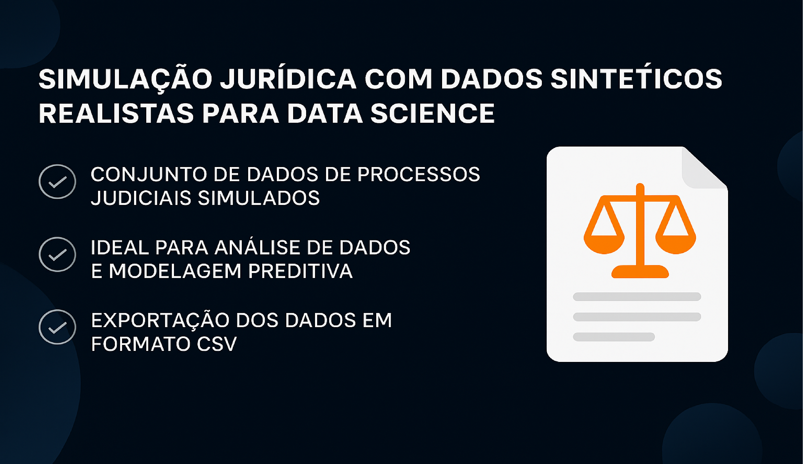

Integraciones y Sustentación de ERP Corporativo (Fiação Itabaiana)
Sustentación completa del ERP Sankhya en ambiente industrial, incluyendo personalizaciones
en Java en el core del sistema, modelado avanzado en Oracle 19c e integración entre
módulos fiscales, financieros y de producción industrial.

Plataforma SaaS Strategic Premium
Producto web construido en PHP/Laravel 11 con FilamentPHP para gestión estratégica
empresarial. Arquitectura multi-tenant con aislamiento por base de datos,
conversión de hojas de cálculo de negocio (OKRs, Matrices GUT, BSC) en sistema web con
control de acceso granular.

Modernización de Legado: Strategic Enterprise
Ingeniería de requisitos completa y refactorización de sistema legado vulnerable.
Reestructuración de arquitectura, corrección de fallos de seguridad, implementación
de versionamiento Git y buenas prácticas de desarrollo.

Dashboard de Almacén con Machine Learning
Sistema inteligente desarrollado para análisis predictivo y gestión estratégica de almacenes
industriales.
Utiliza técnicas avanzadas de Machine Learning para predecir demandas, detectar
anomalías
y optimizar procesos de mantenimiento. El dashboard ofrece interfaz interactiva con
Streamlit, soportando archivos Excel y CSV.
- Herramientas: Python, Streamlit, Scikit-learn, Prophet, Plotly, Pandas
- Modelos ML: Regresión Lineal, Random Forest, Gradient Boosting, Prophet (Meta)
- Funcionalidades: Previsiones 3-12 meses, detección de anomalías, análisis de
criticidad, control financiero
- Destaque: Patch para NumPy 2.0+, validación automática de datos, gráficos
interactivos ordenados cronológicamente

DataLuz – Plataforma SaaS para E-commerce
Desarrollé una solución digital ficticia para pequeños y medianos e-commerce que enfrentan dificultades
con el análisis de datos. DataLuz ofrece dashboards intuitivos, alertas automáticas vía
WhatsApp e informes personalizados. El proyecto forma parte del curso de la Comunidad DS e incluye la
creación completa de un modelo de negocio digital con estrategias AARRR.
- Herramientas: Estrategia de Producto, Métricas AARRR, Viaje del Cliente
- Problema: Falta de tiempo y conocimiento técnico para Business Intelligence
- Solución: Integración vía API, informes automatizados y visualización simplificada
- Destaque: Envío de insights directamente al WhatsApp del emprendedor

Simulación Jurídica con Datos Sintéticos para Data Science
Desarrollé un generador de datos jurídicos sintéticos y realistas, creando un dataset completo con
2.000 procesos, partes involucradas y movimientos procesales. Esta solución es ideal para demostrar
habilidades en análisis de datos, BI y modelado predictivo en un escenario que simula el mundo legal
real.
- Herramientas: Python, Pandas, Faker
- Problema: Dificultad para acceder a datos jurídicos detallados debido a la
confidencialidad
- Solución: Script que genera un dataset robusto y verosímil en formato .csv, listo
para usar en Power BI, Excel o Python
- Destaque: Capacidad de simular un entorno complejo, con valores de causa,
provisiones de riesgo, fases procesales y abogados responsables

Análisis Cohorte – SuperStore
Utilizando Excel, desarrollé un análisis de retención de clientes (Cohort Analysis) con datos reales
de una cadena nacional de supermercados. A partir de la limpieza y estructuración de datos,
identifiqué los mejores grupos de adquisición y patrones de comportamiento, generando insights
estratégicos para retención y ventas.
- Herramientas: Excel, BUSCARV, Tablas Dinámicas, Formato Condicional
- Resultado: La cohorte de mayo/2014 tuvo la mejor retención después de 6 meses
(11%)
- Insight clave: Las campañas promocionales impactan positivamente en la recompra

Análisis RFM – Segmentación de Clientes
Clasifiqué a los clientes según su comportamiento de compra utilizando la técnica RFM
(Recencia, Frecuencia y Valor Monetario). Este análisis permite segmentar la base de clientes
para crear campañas personalizadas y maximizar el retorno de inversión en marketing.
- Herramientas: Excel (ÍNDICE, COINCIDIR, SUMAR.SI, PERCENTIL)
- Segmentos creados: Campeones, Leales, Prometedores, Perdidos y más
- Resultados: 40% de los clientes son potencialmente leales; solo 1% está en "No
Perder"